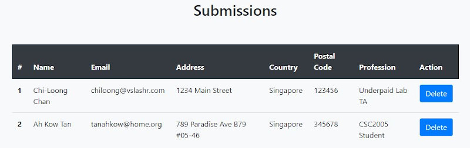

CSC2005: Lab 5
Vue
Intro to frontend JS framework
Objective
Learn why JS frameworks are popular and used in modern web-development.
JS frameworks typically help with two issues: reactivity and componentization.
Reactivity is the ability of the user interface to update when the application state has changed, and also vice versa.
Compartmentalization is how to modularize user interaction interface into components.
Why Vue?
Pros: It is easier to learn than Angular or React.
Cons: It is less popular than React, especially in terms of jobs (2020).
Personal bias: I like Vue's progressive philiosophy better.
Vue: setup
There are many ways of installing Vue, but the simplest (for learning) is just embed it in a script tag.
<script src="https://cdn.jsdelivr.net/npm/vue/dist/vue.js"></script>
Other useful tools for development:
Get a syntax text-editor mark-up for Vue (e.g. Vetur for VSC)
Setup Chrome Vue.js devtools - for debugging
Warning: Vue 3 officially launched on 18th September 2020. It is super new.
The code here is based on Vue 2, because a lot of 3rd party libraries / tools have not been updated yet.
Vue: data(model) + template(view)
Let's start with a very simple example template.
"Hello World" is a classic but not very interesting and doesn't show off reactivity very well.
So let's modify this a bit...
More reading: Template syntax
Vue: reactivity
...And showcase the power of 2-way data binding.
Change the model, and the view updates. Change the view, and the model updates.
A lot of magic for very little code.
Here's a simple example.
More reading: Vue reactivity in depth
Vue: reactivity 2
A third example that showcases reactivity.
Let's do some quick code along as we see why data binding is so powerful.
Vue: Conditional / List rendering
You can easily render a list of objects in an array using the v-for directive.
More reading: List rendering
If you need conditional rendering you can use the v-if directive.
More reading: Conditional rendering
Vue: Computed, watched properties
In-template expressions are very convenient, but they are meant for simple operations.
Putting too much logic in your templates can make them bloated and hard to maintain.
Therefore the idea behind computed properties.
More reading: Computed and watched properties
Vue: Event handling - Methods
As your events get more complicated, you will often call a method for handling the event instead of putting all the logic in the template.
More reading: Events and methods
Vue: Virtual DOM
In a large application, the DOM tree can be huge.
Manipulating this is expensive. You can use a JSON structure to represent DOM nodes instead
This virtual DOM is faster, and how Vue tackles manipulations under the hood. (similar to React. Angular uses its own change detection mechanism)
More reading: Render functions and virtual DOM
Vue: Lifecycle hooks
{kind=link}
More reading: Vue Instance
The lifecycle hook most often used is on mounted. This is when the binding is done with the virtual DOM and everything is setup.
Assignment
Lab 5: Event form submission
Assignment Lab 5: Setup
To be completed by 9-11-2020(Mon) 2359hrs
- Fork the repo https://github.com/csc2005/csc2005-lab05-2020 for lab5
- This repo link will be of the format https://<username>.github.io/csc2005-lab05-2020
- In the forked repo create a basic index.html file, and make it visible on GitHub repo pages (it's under the settings tab, under GitHub pages).
- You can put your CSS style tags, HTML and JS script code into one file, or organize them into files/directories.
Assignment Lab 5: Problem
- Remember your assignment from Lab 4?
- Now you actually have to do something with the form.
- You're going to use Vue to add reactivity to your project.
- And then when you "submit" the content you are going to display the result on the frontend somewhere.
- For this assignment we will NOT write to some backend service - I want to concentrate more on the Vue portion.
Assignment Lab 5: Screenshots
When you submit, add the results to a table. Here's a screenshot.

Extra Challenge: Add in a method to delete rows from the table, and hook it to the UI.
Assignment Lab 5: Comments
- This table is added to the form frontend page, after the form itself.
- Ideally, this table should be on another pane of a single page app, but as I will cover routing next lab, I do not expect it here.
- Grading will be on the reactivity of the UI.
- I will not be looking at the layout and design, but more on how you hook the view to the Vue data model.
- Remember, reactivity is a design pattern that is supposed to save you time / effort.
- If you are not using Vue but can demonstrate this using React and / or Angular, I am fine.
Assignment Lab 5: Here's a template
- You can 100% use your own form template if you do not want to use mine.
- Here's my basic starter template code.
- I've added in the libraries for Vue Bootstrap (a Bootstrap version specifically for Vue that doesn't use JQuery).
- JQuery messes up how Vue manipulates the DOM because their way of modifying the DOM is different under the hood.
- If you use plain Bootstrap, just use for CSS theming (skip the JQuery).
- TLDR: In short, if you use any frameworks, make sure it does not clash with Vue.
Backend
And miscellaneous
Mocking a backend
- There are various ways to simulate a backend.
- For example, read and write to a Google spreadsheet.
- Or use a simple freemium backend (e.g. restdb.io). Scale up all the way to bigger backend-as-a-service.
- Or design and create your own simple API backend. For JS, you spin up a simple Node / Express server.
Will show in class how to use and mock-up a simple backend using restdb.io
Prep for lab 6
- Install node on your machine for npm (or if you have yarn or some other package manager your choice)
- Install vue CLI on your machine (i.e. npm install -g vue-cli)
- If you use defaults the path should be set automatically, else set up your own paths and troubleshoot
- Make sure that you can run the "vue" command from the command line.
Questions?
Chi-Loong | V/R